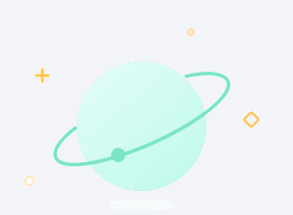

	<ion-nav-view>
		<ion-view>
			<div class="bar bar-header" id="soutou">
				<button class="button back-button buttons button-icon ion-ios-arrow-left dingdan header-item homeDfanhui" state-name="mine"></button>
				<h4>我发布的</h4>
				<button class="button button-icon ion-ios-box-outline dingdan touer1" ></button>
				<button class="button button-icon ion-ios-plus-empty dingdan touer" >
				<i class=""></i>
			</div>
			<div class="bar-subheader" id="homeDbar">
				<div class="ai_nav">
					<a class="hover" nav-transition="none"><em></em>旅行圈</a>
					<a class=""  nav-transition="none"><em></em>游记</a>
				</div>
			</div>

	    	<ion-content class="has-subheader sy_bg_gray">
	    		
	    		<!--无发布消息时显示的页面-->
	    		<!--<div class="travel_none">
	    			<div class="travel_none_1"></div>
	    			<p class="travel_none_p">暂无旅行圈信息</p>
	    		</div>-->
	    		

		    </ion-content>
		</ion-view>
	</ion-nav-view>
